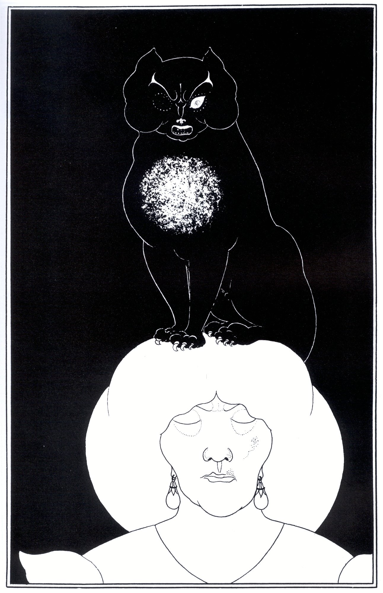

El Gato Negro
The Black Cat" es un cuento de Edgar Allan Poe. Fue publicado por primera vez en la edición del 19 de agosto de 1843 de The Saturday Evening Post. Es un estudio de la psicología de la culpa, a menudo emparejado en análisis con "The Tell" de Poe. -Tale Heart". En ambos, un asesino oculta cuidadosamente su crimen y se cree inexpugnable, pero finalmente se derrumba y se revela, impulsado por un persistente recordatorio de su culpa.
El Amor, las Mujeres y la Muerte
Una obra filosófica que reflexiona sobre las mujeres, la muerte, la política, el egoísmo, la conmiseración y la naturaleza de la sociedad humana. El autor considera que el amor es un tema que la filosofía a dejado de lado y que, sin embargo, ha impulsado a los hombres a realizar grandes hazañas.